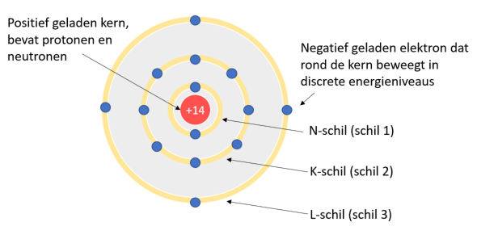
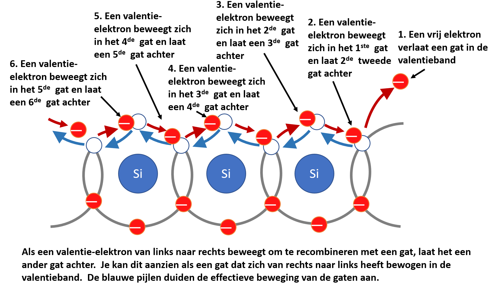

Atoomstructuur van halfgeleiders
Elektronische componeten zoals dioden, transistoren en JFET’s zijn gemaakt van halfgeleidermateriaal. Deze parograaf handelt over het basisprincipe hoe halfgeleiders werken.
Wat is belangrijk?
Je omschrijft de atoomstructuur van halfgeleiders
Je omschrijft hoe silicium- en germaniumatomen kristallen vormen.
Je maakt een vergelijking tussen de energieniveaus in een geleider, halfgeleider en isolator.
Je verklaart hoe een elektronenstroom ontstaat in een intrinsiek halfgeleiderkristal.
Je verklaart hoe een gatenstroom ontstaat in een intrinsiek halfgeleiderkristal.
Elektronenschillen en banen
De elektrische eigenschappen van een materiaal kunnen verklaard worden aan de hand van hun atoomstructuur. Figuur 2-1 toont een siliciumatoom volgens het Bohr-model.

Figuur 2-1 : neutraal Si-atoom met 14 elektronen en protonen
Een atoom bestaat uit een kern welke positieve ladingen (protonen) en ongeladen deeltjes (neutronen) bevat. De elektronen die in een baan rond de kern bewegen zijn negatief geladen. Vanuit de quantummechanica weet men dat elektronen in feite een soort van “materiegolven” zijn. Dit betekent dat een elektron zich in bepaalde omstandigheden gedraagt als een golf en in andere omstandigheden als massa. De afstand tot de kern bepaalt de hoeveelheid energie dat een elektron bezit. Hoe dichter een elektron zich bij de kern bevindt, hoe kleiner zijn hoeveelheid energie. Elektronen bewegen zich in bepaalde gebieden rondom de kern. Deze gebieden worden schillen genoemd. De schillen worden genoemd vanaf de letter . De -schil is de schil die zich het dichts bij de kern bevindt. Zie hiervoor ook figuur 2-1. Schillen kunnen ook genoemd worden met een nummer. In dat geval is de schil met nummer 1 de schil die zich het dichts bij de kern bevindt. Iedere schil kan maar een bepaald maximum elektronen bevatten. Het verschil in energieniveaus binnen een schil is veel kleiner dan het verschil in energieniveaus tussen twee schillen. Een energieniveau is een bepaalde baan rondom een atoom waarin een elektron zich kan bewegen. In één energieniveau kunnen zich maximaal twee elektronen bevinden. De hoeveelheid energie dat een elektron op een bepaald moment bezit, komt overeen met het energieniveau waarin het zich bevindt.
Metaalbindingen
Metalen zijn vaak vaste stoffen bij kamertemperatuur. De kern van een metaalatoom en de binnenste elektronen nemen vaste posities in. Valentie-elektronen bevinden zich in de buitenste schil die valentieband wordt genoemd. Deze elektronen zijn “losjes” en kunnen zich vrij gemakkelijk losmaken van hun atomen waardoor ze tussen de metaalionen door kunnen bewegen in een band die de geleidingsband of conductieband wordt genoemd. Deze vrije elektronen zorgen voor een stroom van negatieve ladingen binnen de structuur waardoor de positief geladen ionen bij elkaar worden gehouden. Men noemt dit metaalbinding.

Figuur 2-2 : verschil geleider, halfgeleider en isolator op energieniveau
Bij metalen overlappen de valentieband en de geleidingsband elkaar (Figuur 2-2 (c)). De elektronen kunnen heel gemakkelijk van de valentieband overvloeien naar de geleidingsband en omgekeerd. De beweging van elektronen van- en naar de geleidingsband veroorzaakt een bepaalde glans bij metalen.
Covalente bindingen
Atomen in kristalstructuren blijven bij elkaar door de vorming van sterke covalente bindingen. Een covalente binding bestaat uit twee elektronen van verschillende atomen die om elkaar draaien (spinnen) en gedeeld worden door beide atomen. Koolstof (C) bijvoorbeeld heeft vier valentie-elektronen op zijn buitenste schil en kan hiermee vier covalente bindingen aangaan met vier andere koolstofatomen. Op die wijze bekomt het koolstofatoom acht elektronen op zijn buitenste schil, wat een toestand van chemische stabiliteit oplevert. De gedeelde elektronen zijn niet mobiel. Ieder gedeeld elektron in de binding hoort bij de covalente binding tussen de atomen van het kristal. Om de covalente binding te bekomen ontstaat er een grotere band-gap (ook energie-gap genoemd) tussen de valentieband en de geleidingsband.
Kristalstructuren zoals diamant zijn isolatoren (niet geleiders) voor elektriciteit. Een band-gap is een ruimte waarin zich geen elektron in stabiele toestand kan bevinden. Heeft het elektron onvoldoende energie om de geleidingsband te bereiken, zal het terugvallen in de valentieband. Voor een isolator heb je veel energie nodig om een elektron vanuit de valentieband te laten overgaan naar de geleidingsband.
Elektronische componenten worden meestal uit materiaal gemaakt dat men halfgeleiders noemt. Veelal wordt silicium gebruikt. Naast silicium wordt ook germanium soms gebruikt als basisstof. Bij kamertemperatuur is silicium een vaste stof met een covalente kristalstructuur. Dit houdt in dat één siliciumatoom covalente bindingen vormt met vier andere siliciumatomen. De structuur is vergelijkbaar met deze van diamant maar niet zo stevig.
Wat is nu het belangrijkste verschil tussen een isolator en een halfgeleider? Dit verschil zit hem vooral in de tussenruimte (bandgap) die de geleidingsband scheidt van de valentieband. Bij halfgeleiders is deze lege ruimte relatief klein. Door toevoeging van thermische energie (warmte) kunnen elektronen gemakkelijk de geleidingsband bereiken. Bij het absolute nulpunt (-273 K) bevinden alle elektronen zich in de valentieband. Bij kamertemperatuur echter hebben vele elektronen voldoende energie om over te vloeien naar de geleidingsband. Eens de elektronen zich in de geleidingsband bevinden, worden het vrije elektronen en zijn ze niet langer aan een atoom van het kristal verbonden.
Elektronenstroom en gatenstroom
Als een elektron naar de geleidingsband springt, blijft er een lege ruimte over bij het atoom. Deze lege ruimte wordt een gat (of hole) genoemd. Voor ieder elektron dat - ten gevolge van de warmte-energie - naar de geleidingsband verdwijnt, blijft er een gat over in de valentieband. Met noemt dit de creatie elektron-gat paar. Recombinatie vindt plaats als een vrij elektron energie verliest en terugvalt in een gat in de valentieband. Bij kamertemperatuur heet een stukje intrinsiek (zuiver) silicium op ieder moment een hoeveelheid vrije elektronen in de geleidingsband en een gelijk aantal gaten in de valentieband.

Figuur 2-3: creatie elektron-gat paar
Legt men een spanning aan over dit stukje intrinsiek siliciumm dan zullen de vrije elektronen gemakkelijk worden aangetrokken door de positieve klem van de spanningsbron. Deze beweging van elektronen is een type van stroom door een halfgeleider en wordt de elektronenstroom genoemd. Een ander stoort van stroom ontstaat er in de valentieband. Als een een elektron de valentieband verlaat ontstaat er een gat in de kristalstructuur. Een valentie-elektron kan met een beetje extra energie zich verplaatsen naar een nabijgelegen gat in de kristalstructuur en laat op zijn beurt een nieuw gat achter. Men kan zich voorstellen dat in dit geval het gat zich verplaatst heeft in de kristalstructuur van de ene positie naar de andere. Deze stroom wordt de gatenstroom genoemd. Merk op dat deze gatenstroom tegengesteld vloeit aan de stroom van valentie-elektronen.

Figuur 2-4: verplaatsing van gaten in een intrinsieke halfgeleider
Test jezelf aangaande de atoomstructuur van halfgeleiders
In welke energieband bevinden zich in een intrinsieke halfgeleider de vrije elektronen?
Hoe ontstaan gaten in een intrinsieke halfgeleider?
Waarom vloeit er gemakkelijker stroom in een halfgeleider dan in een isolator?